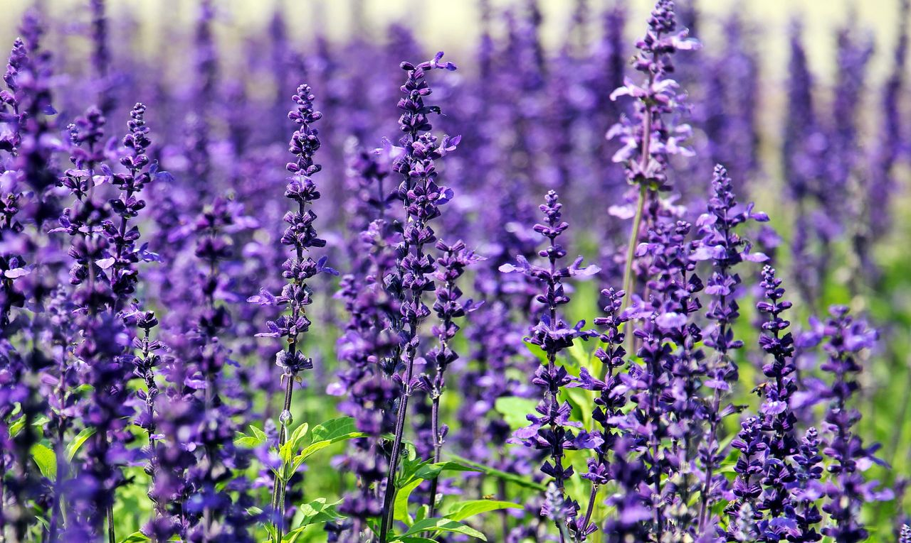
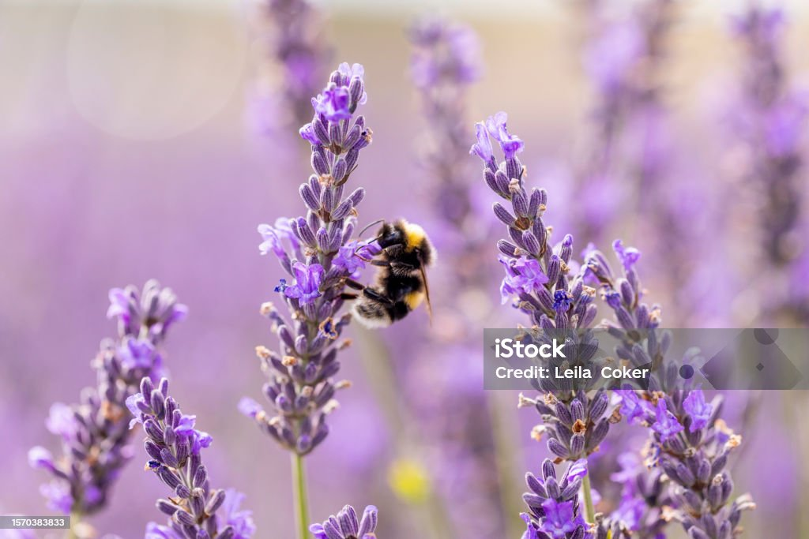

Lavender
Lavandula angustifolia: a silver-green shrub with purple flower spikes that smell calm, sweet and a little bit like soap (in a good way).

Quick facts
- Latin name
- Lavandula angustifolia
- Life cycle
- Perennial
- Origin
- Mediterranean
- Blooms
- June to August
- Height
- 30 to 90 cm
- Likes
- Full sun, dry soil
Explore the plant
Click (or tab to and press Enter on) a part of the drawing.
Pick a part
Flowers, stems, leaves, roots, or the bee. Each one has a story.
Lavender in 3 minutes
What is lavender good for?

- Wardrobe: dried flowers in small cloth sachets.
- Kitchen: a pinch in shortbread, honey or tea (use culinary lavender).
- Garden: bees and butterflies love it.
- Oil: essential oil is used in soaps and candles. It is for the skin and the air, not for eating.
Growing tips
- Sun Give it at least six hours of full sun a day.
- Soil Light, sandy and well drained. Wet soil rots the roots.
- Water Little and rarely, once the plant is established.
- Pruning Trim lightly after flowering, but never cut into the old brown wood, because it will not regrow from there.